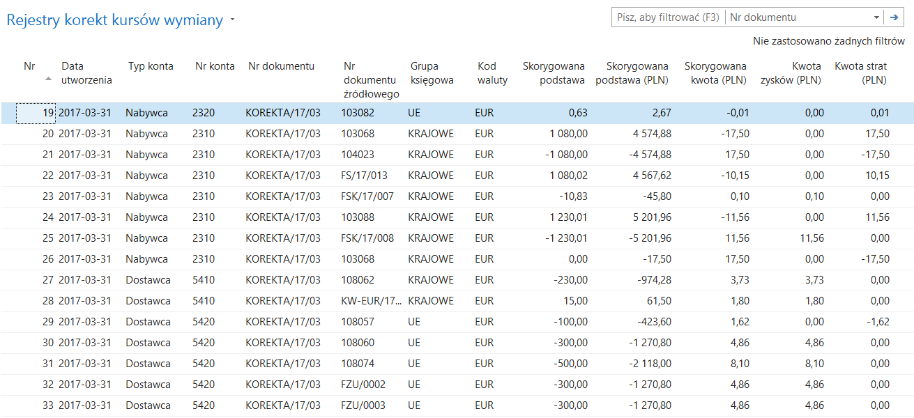
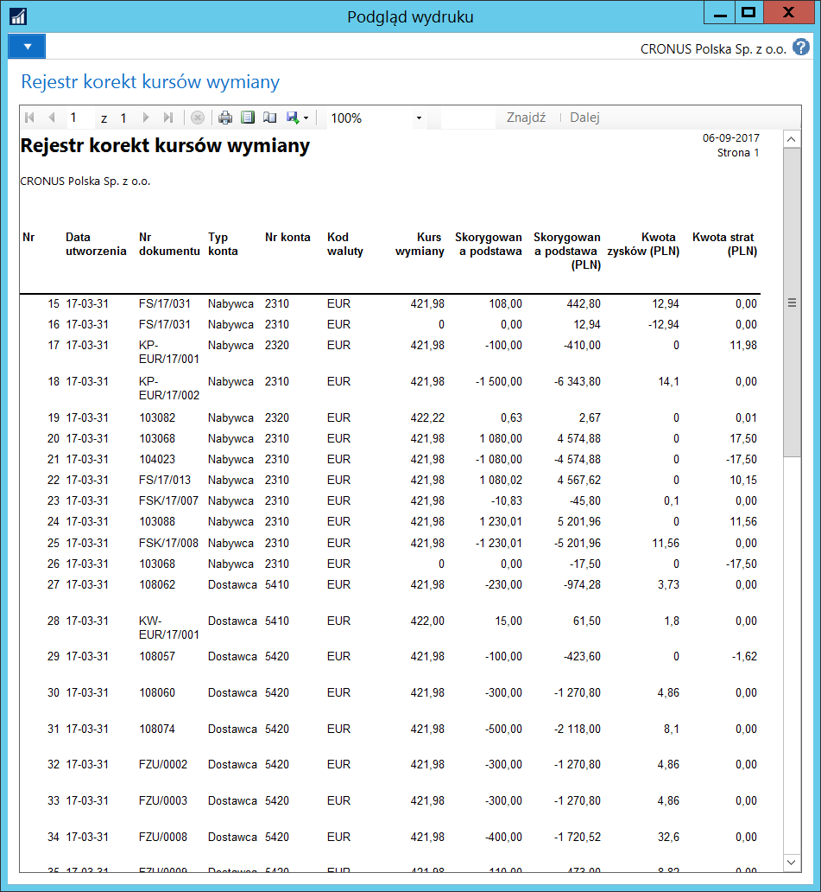

Rejestry korekt kursów wymiany
Informacje ogólne
Zapisy historii korekt kursów wymiany, czyli wycen bilansowych jest przechowywana w Rejestrach korekt kursów wymiany. W ramach Polskiej Lokalizacji rozszerzono standardowy wygląd okna rejestrów i dodano raport księgowania. Pozwala to na uzyskanie pełnej informacji o historii przeprowadzonych korekt kursów wymiany.
Obsługa
W celu uzyskania informacji o historii dokonanych korekt kursów wymiany, należy postępować według następujących kroków:
Należy wybrać Działy > Zarządzanie Finansami > Działania okresowe > Waluta > Rejestry korekt kursów wymiany.
W oknie Rejestry korekt kursów wymiany, które się otworzy, wyświetlone są informacje w następujących polach:
Nr – pole wypełniane automatycznie przez system numerem kolejnym księgowania korekty kursów wymiany.
Data utworzenia – pole wypełniane automatycznie przez system datą, kiedy fizycznie zostało dokonane księgowanie korekty kursów wymiany.
Typ konta – pole wypełniane automatycznie przez system typem konta, na którym została dokonana korekta kursów wymiany.
Nr konta – pole wypełniane automatycznie przez system numerem konta (zgodnym z Typem konta), na którym została dokonana korekta kursów wymiany.
Nr dokumentu – pole wypełniane automatycznie przez system numerem dokumentu, na podstawie którego zostało dokonane księgowanie korekty kursów wymiany.
Nr dokumentu źródłowego – pole wypełniane automatycznie przez system numerem dokumentu źródłowego dla zapisu, dla którego została dokonana korekta kursów wymiany.
Grupa księgowa – pole wypełniane automatycznie przez system kodem grupy księgowej w zapisie, dla którego została dokonana korekta kursów wymiany.
Kod waluty – pole wypełniane automatycznie przez system kodem waluty, dla której została dokonana korekta kursów wymiany.
Skorygowana podstawa – pole wypełniane automatycznie przez system kwotą w walucie źródłowej, dla której została dokonana korekta kursów wymiany.
Skorygowana podstawa (PLN) – pole wypełniane automatycznie przez system równowartością kwoty w walucie lokalnej, dla której została dokonana korekta kursów wymiany.
Skorygowana kwota (PLN) – pole wypełniane automatycznie przez system kwotą niezrealizowanych różnic kursowych w walucie lokalnej, będącą wynikiem dokonanej korekty kursów wymiany.
Kwota zysków (PLN) – pole wypełniane automatycznie przez system kwotą dodatnich niezrealizowanych różnic kursowych w walucie lokalnej, będącą wynikiem dokonanej korekty kursów wymiany.
Kwota strat (PLN) – pole wypełniane automatycznie przez system kwotą ujemnych niezrealizowanych różnic kursowych w walucie lokalnej, będącą wynikiem dokonanej korekty kursów wymiany.

Rejestry korekt kursów wymiany mogą być też drukowane. W tym celu należy postępować według następujących kroków:
W oknie Rejestry korekt kursów wymiany należy wybrać Rejestr korekt kursów wymiany.
W oknie wstępnym raportu, które się otworzy, można ograniczyć zakres prezentowanych danych, ustawiając w sposób standardowy filtry w polach na karcie skróconej Rejestr korekt kursu wymiany. Następnie należy wybrać Drukuj lub Podgląd.
